Đề Tài 11: Tạo Bộ Dữ Liệu Khuôn Mặt Giả Bằng Stable Diffusion Phục Vụ Phát Hiện Deepfake
Stable Diffusion-Based Synthetic Facial Dataset Generation for Deepfake Detection
Đồ án thực hiện trọn vẹn vòng đời dữ liệu-lấy-làm-trung-tâm (Dataset-First) theo đúng 3 bước cốt lõi của giảng viên và mở rộng lên thích nghi đa động cơ: từ 4.000 ảnh thật (FFHQ + CelebA-HQ) → sinh 12.545 ảnh giả từ 2 mô hình (SD 1.5: 6.545 thô / 5.251 đạt chuẩn CurationGate; RealisticVision v5.1: 6.000 ảnh) → khai thác 740 mẫu khó SD 1.5 → nâng Fake Recall trên 213 Challenge Vault từ 11.71% → 91.89% (M₂*) → dùng M₂* profiling 6.000 RV5.1 (phát hiện 1.192 ca bỏ lọt ở chuẩn 512px chỉ để quan sát) và cách ly danh tính sạch để huấn luyện Champion M₃ đạt 93.13% trên Unseen RV5.1 (94.37% trên toàn kho 6k RV5.1).

Thực Trạng: Vì Sao Ảnh Giả Làm Mờ Biên Có Thể Đánh Lừa Các Bộ Dò Truyền Thống?
Các mô hình deepfake ghép mặt truyền thống (Face-Swap) thường để lại đường cắt ghép sắc nhọn (Hard Mask Boundary), khiến các mạng CNN dễ dàng dựa vào vết cắt này để phân loại. Trong đề tài này, pipeline sinh ảnh áp dụng kỹ thuật Làm Mịn Biên Gaussian (Soft-Mask Feathering) trên mặt nạ elip giải phẫu (blur_radius = 18–20, tương đương σ = 9.0–10.0 trong stable_diffusion_engine.py; hình mô phỏng minh họa dùng σ = 4.0), hòa trộn mượt vùng sinh mới vào khuôn mặt gốc và triệt tiêu đường biên nhân tạo.
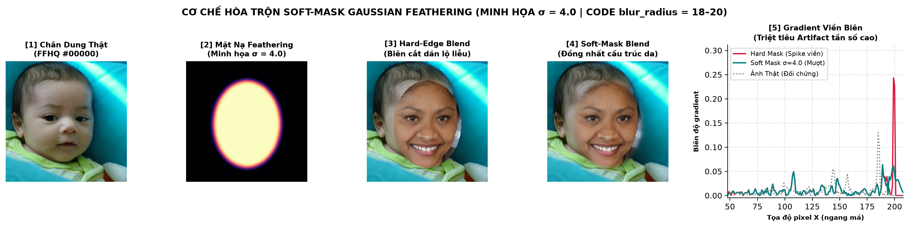
512→504px LANCZOS (và tụt còn 2.00% nếu bị ép nén xuống 224×224), còn trên tập Unseen RV5.1 độc lập danh tính vẫn bỏ lọt 33.55%.
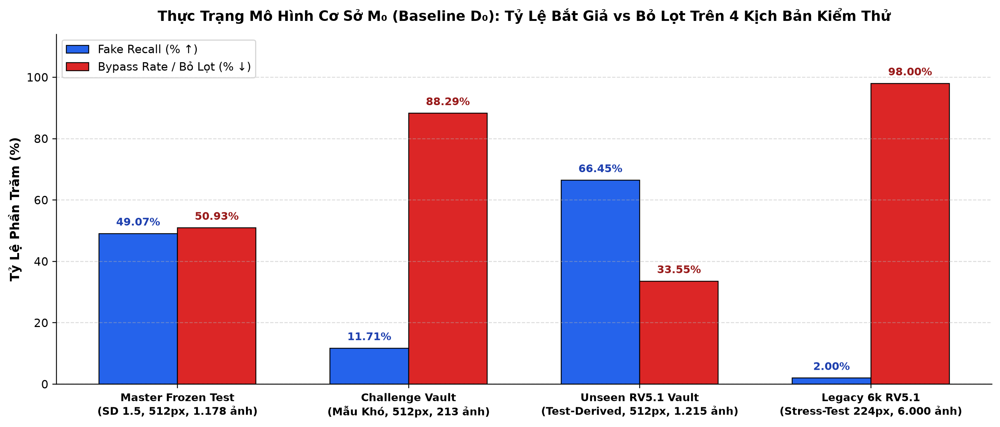
Kiến Trúc Dữ Liệu: 4.000 Ảnh Thật & 12.545 Ảnh Sinh Từ Dual-Engine Diffusion
Từ kho nền tảng 4.000 ảnh thật (2.000 FFHQ + 2.000 CelebA-HQ, chia độc lập danh tính thành 2.813 train / 598 val / 589 test), nhóm đã sinh tổng cộng 12.545 ảnh giả qua Dual-Engine Diffusion (SD 1.5: 6.545 thô → 5.251 đạt chuẩn CurationGate; RealisticVision v5.1: 6.000 ảnh) trên cả 3 chế độ Inpainting, Img2Img và Text-to-Image.
| Nguồn Dữ Liệu | Checkpoint / Kho Gốc | Quy Mô Thực Tế | Vai Trò Trong Pipeline |
|---|---|---|---|
| Ảnh Thật Gốc (Real) | FFHQ (2.000) + CelebA-HQ (2.000) | 4.000 ảnh | Chia identity-disjoint: 2.813 train / 598 val / 589 test |
| Bộ A: Stable Diffusion v1.5 | configs/dataset_factory.yaml → generation.model_id (SD v1.5 Base) |
6.545 thô (5.251 sạch) | Khởi tạo D₀ (2.200 sạch) + AL 2 vòng (1.484 R1 + 1.567 R2 sạch) — xem phễu lọc ở Mục 4 |
| Bộ B: RealisticVision v5.1 | SG161222/Realistic_Vision_V5.1_noVAE |
6.000 ảnh (2k×3 chế độ) | OOD Profiling (M₀–M₂*) & trích 1.384 sạch vào D₃ (cách ly 626 test + 600 val) |
| Tổng cộng ảnh giả sinh mới | Dual-Engine Diffusion | 12.545 ảnh giả | Tổng kho toàn dự án: 16.545 ảnh (4.000 Real + 12.545 Fake thô / 11.251 Fake sau lọc; mốc 10.000 ảnh trong clean_10k_production_report.json = 4.000 Real + 6.000 Fake SD 1.5 gồm 2.200 D₀ + 1.900 R1 + 1.900 R2) |
| Phiên Bản Tập Dữ Liệu | Train (Ảnh Thật + Giả) | Validation | Tập Kiểm Thử Độc Lập | Mô Hình Huấn Luyện |
|---|---|---|---|---|
| D₀ (Baseline) | 4.224 (2.813 Real + 1.411 SD 1.5) | 798 (598 Real + 200 SD 1.5) | Master Frozen Test: 1.178 (589+589) | M₀ (baseline_d0_best.pt) |
| D₁ (Active R1) | 4.694 (D₀ + 470 Hard R1) | 798 (như D₀) | Master (1.178) + Challenge R1 (83 Fake) | M₁ (active_learning_m1_best.pt) |
| D₂ (Active R2) | 4.853 (D₁ + 159 Hard R2) | 798 (như D₀) | Master (1.178) + Challenge Vault (213) | M₂ (Cold) & M₂* (Warm-Start) |
| D₃ (Dual-Engine Sạch) | 5.626 (2.813 Real + 629 Hard + 800 SD + 1.384 RV5.1) | 1.198 (598 Real + 600 RV5.1 Val) | Unseen RV5.1 Vault: 1.215 (589 Real + 626 RV5.1 Test) | M₃ (active_learning_m3_best.pt) |

Một Số Mẫu Khuôn Mặt Điển Hình Trong Bộ Dữ Liệu:
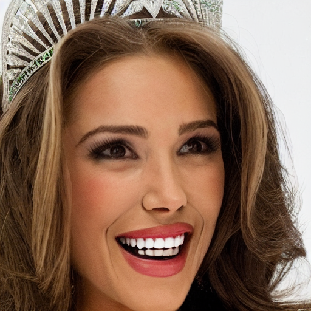

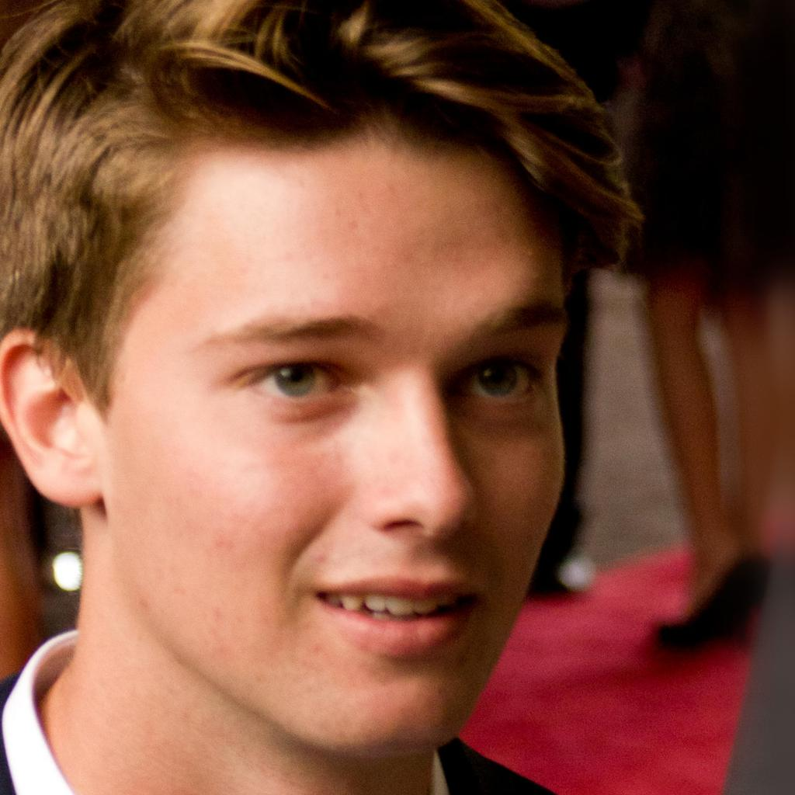


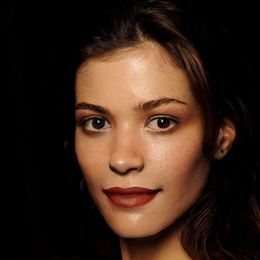
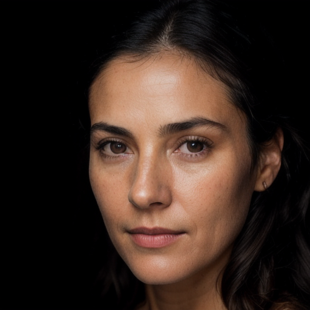

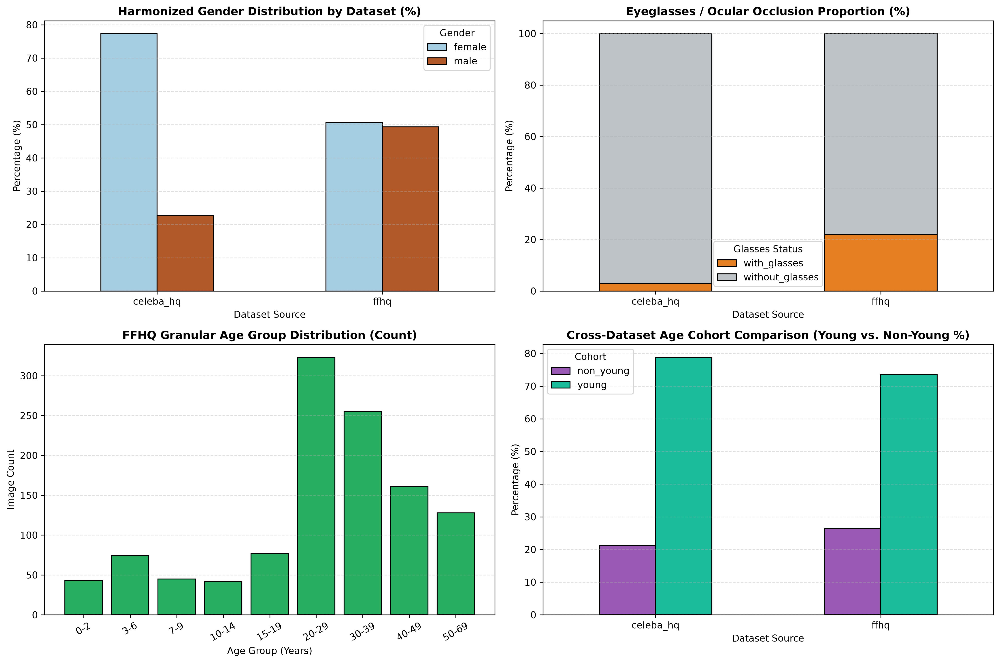
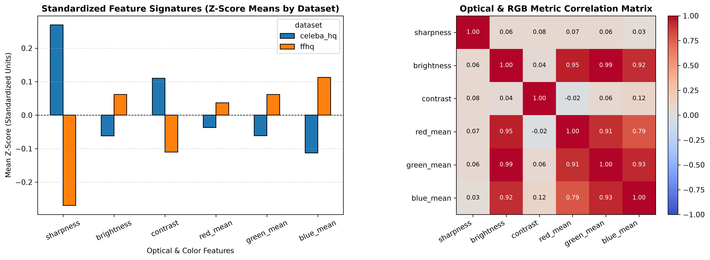
Giải Phẫu Kỹ Thuật Sinh Ảnh: 3 Chế Độ × SD 1.5 Base vs RealisticVision v5.1
Mọi ảnh giả ở kích thước chuẩn 512×512 đều chạy qua bộ giải đa bước DPMSolverMultistepScheduler (cấu hình dpmsolver++ kết hợp use_karras_sigmas=True). Tuy nhiên, Bộ A (SD v1.5 Base) và Bộ B (RealisticVision v5.1) khác nhau căn bản về chiến lược điều khiển Latent, cơ chế tạo Mask Inpainting, công thức Prompt/Negative Prompt và siêu tham số — trực tiếp tạo ra hai dải phổ giả mạo từ "dễ lộ ranh giới" đến "tả thực lỗ chân lông".
sd_text2img) — Sinh Danh Tính Mới Hoàn Toàn Từ Nhiễu
Latent (4, 64, 64) → VAE Decode → (3, 512, 512)
z_T ~ N(0, I) ngẫu nhiên, hoàn toàn không dùng ảnh thật đầu vào (source = null).sd_img2img) — Giữ Khung Mặt Gốc, Đổi Vi Kết Cấu Da & Ánh Sáng
Mã hóa ảnh thật → Bơm nhiễu tỷ lệ strength → Tái tạo steps × s bước cuối
512×512 đưa qua VAE Encoder thành latent z₀.
sd_inpaint) — Chỉ Vẽ Lại Vùng Mask, Khóa 95% Pixel Thật Xung Quanh
Dùng chung checkpoint stable-diffusion-v1-5/stable-diffusion-inpainting (UNet 9 kênh)
4ch z_t + 1ch mask + 4ch vùng nền khóa để chỉ sửa bên trong mask.Đối Chiếu Trực Diện Hai Động Cơ: Bộ A (SD 1.5 Base) vs Bộ B (RealisticVision v5.1)
| Tiêu Chí Kỹ Thuật | Bộ A: Stable Diffusion v1.5 Base (src/pipelines/generate_deepfake_images.py) |
Bộ B: RealisticVision v5.1 (scripts/run_generation.py) |
|---|---|---|
| Checkpoint T2I & Img2Img | configs/dataset_factory.yaml → generation.model_id (SD v1.5 Base) |
SG161222/Realistic_Vision_V5.1_noVAE (tinh chỉnh chuyên tả thực ảnh chụp) |
| Checkpoint Inpainting | stable-diffusion-v1-5/stable-diffusion-inpainting (UNet 9 kênh) |
Dùng chung stable-diffusion-v1-5/stable-diffusion-inpainting (INPAINT_MODEL) |
| Steps & CFG Scale | steps = 20 | guidance_scale = 6.2 (cân bằng tốc độ và độ tự nhiên) |
steps = 25 | guidance_scale = 7.0 (đẩy chi tiết da & ánh sáng sắc nét hơn) |
| Img2Img Strength | 0.30 (tự động hạ xuống ≤ 0.25 nếu mẫu là trẻ em 0–6 tuổi hoặc đeo kính để chống biến dạng) |
0.55 (mức biến đổi mạnh hơn ở kết cấu da & biểu cảm trong 2.000 mẫu Img2Img) |
| Scheduler & Seed | DPMSolverMultistepScheduler (dpmsolver++, Karras) • Seed CRC32 tất định sample_seed() |
DPMSolverMultistepScheduler (Karras sigmas; dpmsolver++ cho T2I/I2I) • Seed 42 + idx |
| Cơ Chế Mask Inpainting | generate_dynamic_face_mask: OpenCV Haar dò mặt, xoay vòng 3 vùng (periocular, lips, full +18% cằm), Gaussian blur_radius=18 + alpha blend mềm |
create_mask(512×512): Ellipse nhị phân cứng chia 50% vùng miệng (mouth, chẵn) và 50% vùng mắt/kính (eyes, lẻ) |
| Chiến Lược Tạo Prompt | PromptGrammarEngine (7 Slot) + giới hạn ≤ 45 từ (< 70 CLIP token); Active Learning gắn Softmax Error-Steering (exploration_floor=0.15) |
T2I: Lưới Descartes 5 chiều 2.000 tổ hợp (10 tuổi × 2 giới tính × 5 sắc tộc × 5 biểu cảm × 4 ánh sáng) I2I & Inpaint: Prompt mẫu cố định RAW photo, 8k uhd, dslr |
| Hệ Quả Thực Nghiệm | Nhiều ca biên mềm tinh vi ở chế độ Inpaint → ép M₀ sụp đổ và làm bàn đạp Active Learning (M₀ → M₂*: 11.71% → 91.89%) |
Kết cấu lỗ chân lông & ánh sáng cực giống ảnh chụp thật → phơi bày điểm mù OOD của M₂* (lọt 1.192/6.000 @ 512px; 1.792/6.000 @ 224px) trước khi M₃ học khóa 93.13% Unseen / 94.37% toàn kho 6k |
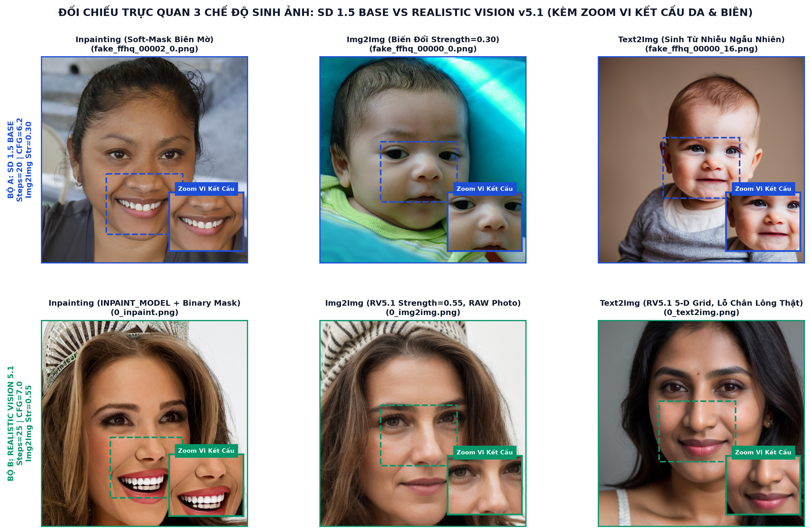
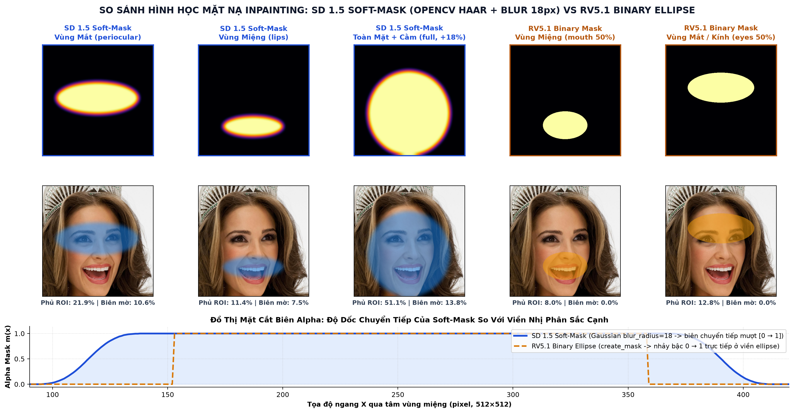
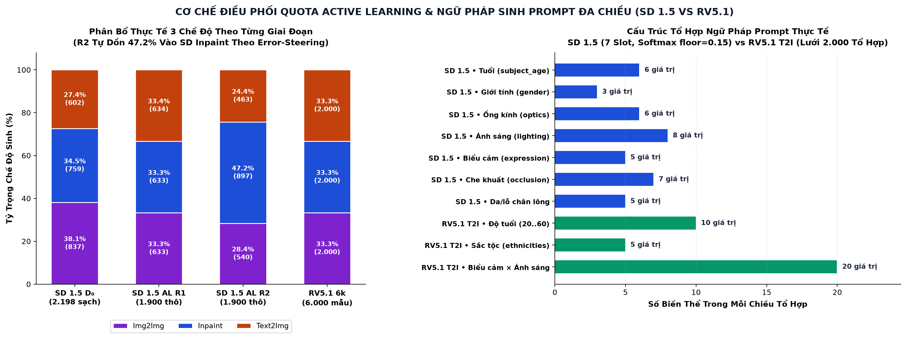
Giải Phẫu Prompt Thực Tế Trích Nguyên Văn Từ Manifest & Negative Prompt
fake_ffhq_00003_1.png)
PromptGrammar 7-Slot
1966126620.0_text2img.png)
5-D Cartesian Grid (2.000)
10 tuổi × 2 giới × 5 sắc tộc × 5 biểu cảm × 4 sáng = 2.000 tổ hợp cân bằng (seed=42).fake_ffhq_00000_0.png)
Strength=0.30 (≤0.25 trẻ)
strength ≤ 0.25 với trẻ em/kính để tránh biến dạng khuôn mặt.0_img2img.png)
Strength=0.55 • Cố Định
2.000 ảnh CelebA-HQ, dùng strength=0.55 để tái tạo lớp bề mặt DSLR sắc nét.fake_ffhq_00002_0.png)
ROI: lips / periocular / full
0_inpaint.png)
50% Mouth / 50% Eyes
[Vùng mắt - lẻ]: wearing stylish black sunglasses, natural skin reflections, photorealistic, 8k uhd
stable-diffusion-v1-5/stable-diffusion-inpainting.
• Bộ A — CALIBRATED_NEGATIVE_PROMPT (SD 1.5):
blurry, distorted face, bad anatomy, deformed eyes, extra fingers, cartoon, 3d render, doll, oversaturated, plastic skin, mutation, cropped forehead, unitooth, out of frame
Mục tiêu: Triệt tiêu các dị tật đặc trưng của SD 1.5 như răng liền khối (unitooth), da nhựa (plastic skin), búp bê (doll) và cắt trán (cropped forehead).
• Bộ B — NEGATIVE_PROMPT (RV5.1):
deformed, bad eyes, bad anatomy, bad hands, poorly drawn face, mutation, mutated, ugly, disgusting, cartoon, 3d, anime, airbrushed, oversaturated, blurry, low quality, watermark, text, signature
Mục tiêu: Ngăn mô hình bị trơn láng quá mức (airbrushed) và chặn triệt để chữ ký/watermark (watermark, text, signature) vốn xuất hiện trong tập pre-train ảnh chụp chân thực.
CurationGate: Phễu Lọc Tự Động 3 Tầng (6.545 Thô → 5.251 Ảnh SD 1.5 Đạt Chuẩn)
Triển khai thực tế trong ImageCurationGate (src/pipelines/curate_image_dataset.py & configs/dataset_factory.yaml), mỗi ảnh sinh mới phải vượt qua 3 tầng kiểm duyệt tự động trước khi vào tập huấn luyện:
[0, 1] nhân hệ số 1000 (compute_laplacian_sharpness); ngưỡng loại bỏ ảnh mờ được hiệu chỉnh động tại phân vị 5% (q = 0.05) của ảnh thật gốc (mặc định ≥ 1.25).2. Tầng 2 — Hình học & Giải phẫu khuôn mặt (
opencv_haar + verify_facial_geometry): Phát hiện khuôn mặt bằng OpenCV Haar Cascade (loại bỏ ảnh không thấy mặt hoặc có ≥ 2 khuôn mặt); kiểm tra tỷ lệ khung mặt 0.65 ≤ h/w ≤ 1.6, diện tích mặt chiếm 20%–65% khung hình, không bị cắt cụt trán/cằm (skin ≤ 35% tại mép ảnh), không cháy sáng ROI mặt (> 8.0%), không lệch tâm (0.15–0.85), và không có đường cắt ngang bất thường ở miệng/cằm (seam_spike > 8.0 & peak > 20.0).3. Tầng 3 — Chống trùng lặp & Kết quả lọc thực tế: Khử trùng lặp tệp bằng băm nội dung SHA-256 (
file_sha256) trong CurationGate (và khử trùng lặp ngữ nghĩa bằng khoảng cách Cosine DINOv2 ≥ 0.05 ở bước mining). Tổng cộng loại bỏ 1.294 ảnh lỗi trên SD 1.5: Block 1 giữ 2.200/2.745 (80.15%, kết hợp sinh bù tối đa 3 lượt att0→att1→att2); AL Vòng 1 giữ 1.484/1.900 (78.11%); AL Vòng 2 giữ 1.567/1.900 (82.47%) — tổng 5.251/6.545 (80.23%) đạt chuẩn.
| Giai Đoạn Sinh SD 1.5 | Ảnh Sinh Thô (Raw) | Bị Loại (Rejected) | Đạt Chuẩn Sạch (Curated) | Tỷ Lệ Đạt (Pass Rate) | Phân Bổ Tiếp Theo |
|---|---|---|---|---|---|
| Khởi tạo Block 1 (D₀) | 2.745 | 545 | 2.200 | 80.15% | 1.411 Train + 200 Val + 589 Master Test |
| Active Learning Vòng 1 (R1) | 1.900 | 416 | 1.484 | 78.11% | Chấm bởi M₀ → lọc 553 mẫu khó (470 Train + 83 Test) |
| Active Learning Vòng 2 (R2) | 1.900 | 333 | 1.567 | 82.47% | Chấm bởi M₁ → lọc 187 mẫu khó (159 Train + 28 Test) |
| Tổng cộng SD 1.5 | 6.545 | 1.294 | 5.251 sạch | 80.23% | Đóng gói hoàn chỉnh D₀ → D₁ → D₂ (740 Hard Samples) |
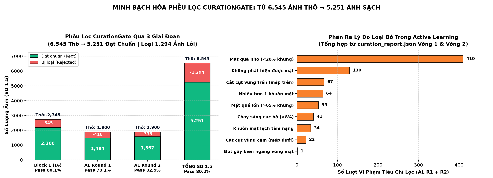


Challenge Vault: Khai Thác 740 Mẫu Khó SD 1.5 & Phân Tích 4 Lỗi Giải Phẫu (Anatomical Artifacts)
Qua 2 vòng Active Learning đóng trên SD 1.5 (CalibratedHardMiner, configs/active_learning.yaml), mô hình chấm điểm các ảnh đã qua CurationGate sau bước Temperature Scaling (T = 1.9831 ở Vòng 2) dựa trên 2 tiêu chí: False Negatives (P < 0.50) và Boundary Uncertain (|P - 0.50| ≤ 0.10), kết hợp lọc đa dạng embedding Cosine ≥ 0.05. Theo nhật ký closed_loop_metrics.json, thu được 570 FN + 170 Uncertain = 740 mẫu khó (Vòng 1 bởi M₀: 429 + 124 = 553; Vòng 2 bởi M₁: 141 + 46 = 187); khi đối chiếu lại theo baseline_score trong hard_samples_manifest.jsonl có 616 mẫu < 0.50 và 124 mẫu ≥ 0.50. Từ 740 mẫu này, nhóm tách 629 mẫu vào train (D₂, D₃) và 111 mẫu ghép cùng 102 ảnh thật thành 213 Challenge Vault. (Riêng kết quả dùng M₂* profiling trên 6.000 ảnh RV5.1 — 1.192 ca bỏ lọt @ 512px / 1.792 @ 224px chỉ để quan sát — xem tại Mục 7).


Active Learning Vòng 2: Mô Hình M2* Tăng Tỷ Lệ Phát Hiện Ảnh Giả Từ 11.71% Lên 91.89%
Bằng cách chỉ mở khóa tinh chỉnh tầng Block 11 của DINOv2 (chiếm 8.06% tham số) kết hợp Warm-Start từ M1 và Differential Learning Rates, mô hình M2* đã dịch chuyển ranh giới quyết định chính xác, phát hiện đúng 102/111 mẫu giả cực khó và nâng ROC-AUC trên Challenge Vault từ 0.8713 lên 0.9875!

• Phân rã lỗi Vòng 1 (Error Attribution): Phát hiện
sd_inpaint đánh lừa M₀ tới 71.70% (so với sd_img2img 20.82% và sd_text2img 5.59%) → AdaptiveBudgetController tự động dồn ngân sách sinh Vòng 2 vào Inpaint (897), Img2Img (540), Text2Img (463).• Kết quả Vòng 2: Error rate của Inpaint giảm sâu từ 71.70% → 19.88%; đồng thời
PromptGrammarEngine truy vết và tập trung vào vùng khó nhất như quanh mắt (periocular: 39.53%), ánh sáng studio (13.87%), người cao tuổi (elderly: 13.61%) và flash gắt (13.30%).
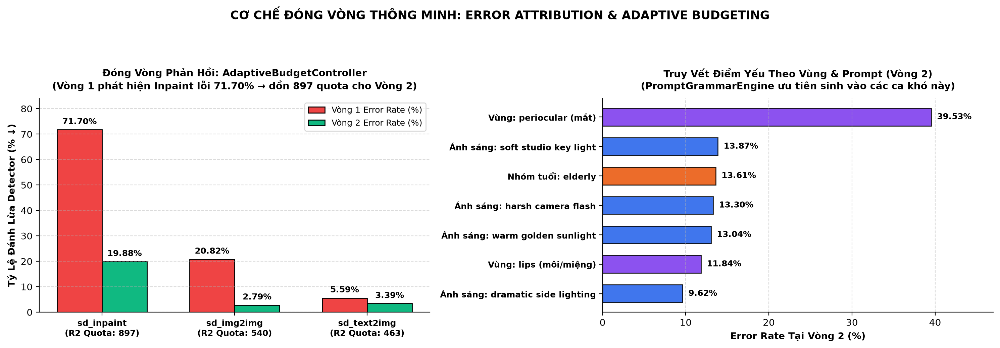
| Phiên Bản Mô Hình | Fake Recall (↑) | Bypass Rate (↓) | Accuracy (↑) | ROC-AUC (↑) | Số Mẫu Bắt Được (/111) | Đánh Giá Kỹ Thuật |
|---|---|---|---|---|---|---|
| M0 (D0 Baseline) | 11.71% | 88.29% | 53.99% | 0.8713 | 13 / 111 mẫu | BỎ SÓT NHIỀU |
| M1 (Active Round 1) | 70.27% | 29.73% | 83.10% | 0.9655 | 78 / 111 mẫu | CẢI THIỆN RÕ RỆT |
| M2 (Cold-Start Retrain) | 86.49% | 13.51% | 92.49% | 0.9937 | 96 / 111 mẫu | KẾT QUẢ TỐT |
| 🏆 M2* (Refined Champion) | 91.89% (+80.18%) | 8.11% | 93.90% | 0.9875 | 102 / 111 mẫu | HIỆU QUẢ CAO NHẤT |
Zero Identity Leakage: Phân Vai 740 Mẫu Khó SD 1.5 vs 6.000 Ảnh RV5.1 & Cách Ly Danh Tính Tập Test
Khi kiểm toán 6.000 ảnh từ động cơ siêu thực RealisticVision v5.1, nhóm phát hiện có 626 ảnh (313 inpaint + 313 img2img) được sinh từ các khuôn mặt gốc thuộc tập kiểm thử test_reals.jsonl, và 600 ảnh thuộc tập val_reals.jsonl. Nhóm cách ly tuyệt đối 626 ảnh test sang unseen_rv51_test.jsonl (cùng 589 ảnh thật thành 1.215 ảnh) và 600 ảnh val sang D3_clean/val.jsonl; từ 4.774 ảnh RV5.1 sạch danh tính còn lại, nhóm trích mẫu phân tầng 1.384 ảnh kết hợp với 629 mẫu khó SD 1.5 và 800 mẫu SD 1.5 cơ bản thành tập huấn luyện D3_clean/train.jsonl cân bằng 1:1 (2.813 Thật : 2.813 Giả = 5.626 ảnh).
740 mẫu khó là sản phẩm Active Learning nội miền của SD 1.5 (553 vòng 1 + 187 vòng 2), chứng minh Proof of Utility cấp độ 1 trên D0 → D1 → D2.2) RV5.1 đóng vai trò Thử Nghiệm Đối Kháng Ngoại Miền (OOD cho M₀–M₂*): Ở độ phân giải chuẩn
512→504px trên toàn bộ 6.000 ảnh (legacy_6k_benchmark_results.json), M₀ bỏ lọt 24.80% (1.488/6.000), M₂* (active_learning_m2_best.pt) bỏ lọt 19.87% (1.192/6.000), và riêng trên tập Unseen RV5.1 (nhiều ảnh inpaint/img2img khó) M₀ bỏ lọt 33.55% còn M₂* bỏ lọt 28.12%; còn ở phép thử nén thấp 224×224 trước đây (legacy_6k_benchmark_results_224px.json), M₀ sụp xuống 98.00% bỏ lọt và M₂* bỏ lọt 29.87% (1.792/6.000).3) Chống rò rỉ danh tính tuyệt đối: Nếu gộp bừa ảnh RV5.1 bị bỏ lọt vào tập train, 626 ảnh có khuôn mặt trùng
test_reals.jsonl sẽ rò rỉ vào tập học. Việc cách ly 626 ảnh này theo nguồn gốc danh tính giúp kiểm chứng M₃ thích nghi đa động cơ trên danh tính hoàn toàn độc lập (93.13% Recall).
| Cấp Độ Thực Nghiệm | Nguồn Dữ Liệu Sinh | Cơ Chế Khai Thác / Kiểm Định | Kết Quả Chứng Minh (Proof of Utility) |
|---|---|---|---|
| Cấp 1: Nội Miền SD 1.5 | Stable Diffusion v1.5 (~6.545 ảnh) | Active Learning 2 vòng → 740 mẫu khó (629 train D₂, 111 Challenge Vault) | M₂* tăng Recall Challenge Vault 11.71% → 91.89% (+80.18%, AUC 0.9875) |
| Cấp 2: Đa Động Cơ (D₃ → M₃) | RealisticVision v5.1 (6.000 ảnh) + SD 1.5 | Cách ly 626 ảnh trùng test + 600 ảnh val; trích phân tầng 1.384 RV5.1 sạch + 629 hard SD 1.5 | M₃ tăng Recall trên unseen_rv51_test 71.88% → 93.13% (bypass 6.87%), giữ nguyên 91.89% SD 1.5 |
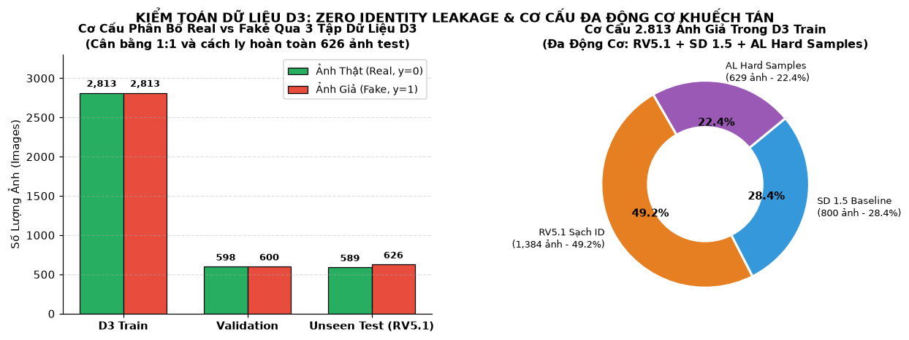
PURPOSE.md) và không gây rò rỉ dữ liệu vì các mẫu này không đưa vào train. Nhóm chọn M₂* (Refined Warm-Start, active_learning_m2_best.pt) thay vì M₂ (Cold-Start) vì M₂ bị Catastrophic Interference (tụt Recall RV5.1 512px xuống 56.55%, kém cả M₀ 66.45%), nên nếu dùng M₂ sẽ lọc nhầm nhiều mẫu do quên kiến thức; trong khi M₂* giữ Recall 71.88% (512px) và 91.89% (Challenge Vault), nên những ca đánh lừa được M₂* mới là điểm mù siêu thực đích thực:• Bị M₂* bỏ lọt ở chuẩn
512→504px (P(Fake) < 0.50): 1.192 / 6.000 ảnh (19.87%) — chủ yếu tập trung ở inpaint 862/2.000 (43.10%; vùng miệng 45.30%, vùng mắt 40.90%), kế đến img2img 328/2.000 (16.40%), trong khi text2img chỉ sót 2/2.000 (0.10%).• Vùng phân vân (
|P - 0.50| ≤ 0.15): 183 / 6.000 ảnh (3.05%) (hợp cả 2 tiêu chí: 1.282 / 6.000 ảnh). Sau khi huấn luyện đa động cơ, M₃ nâng Recall toàn kho 6k lên 94.37% (chỉ còn 338/6.000 bypass).
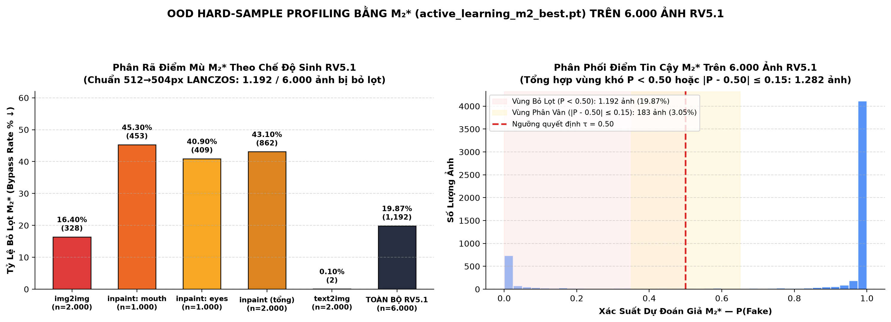
Mô Hình Champion M3: Đạt 93.13% Trên Unseen RV5.1 Mà Vẫn Giữ Vững Hiệu Năng SD 1.5
Kế thừa trọng số từ M2* (Warm-Start) và tinh chỉnh Block 11 + Head qua 6 epochs với Cosine Annealing trên tập D3_clean/train.jsonl (5.626 ảnh), mô hình Champion M3 đạt best_val_auc = 0.9846 ở Epoch 6 và nâng Fake Recall trên unseen_rv51_test.jsonl (độc lập danh tính) từ 71.88% lên 93.13% (ROC-AUC 0.9828) mà không bị quên kiến thức SD 1.5!
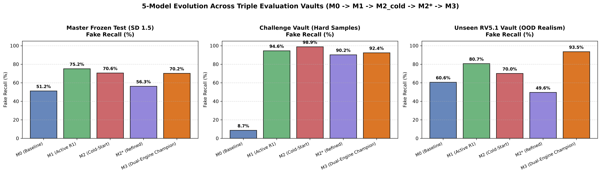
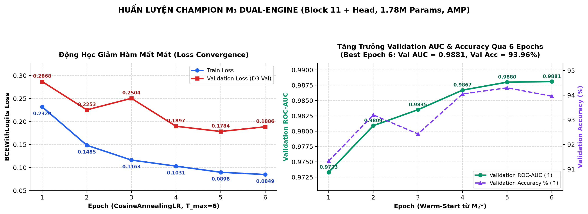
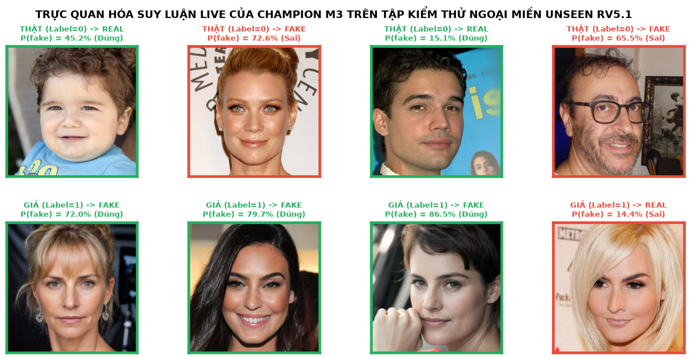
| Phiên Bản Mô Hình | Master Frozen Test (SD 1.5 — 1.178 ảnh) Recall | Bypass | Acc | ROC-AUC | F1 |
Challenge Vault (Mẫu Khó — 213 ảnh) Recall | Bypass | Acc | ROC-AUC | F1 |
Unseen RV5.1 Vault (1.215 ảnh — Độc Lập Danh Tính) Recall | Bypass | Acc | ROC-AUC | F1 |
|---|---|---|---|
| M0 (D0 Baseline) | 49.07% | 50.93% | 74.11% | 0.8850 | 0.6546 | 11.71% | 88.29% | 53.99% | 0.8713 | 0.2097 | 66.45% | 33.55% | 82.30% | 0.9162 | 0.7947 (OOD) |
| M1 (Active Round 1) | 62.14% | 37.86% | 79.20% | 0.9161 | 0.7492 | 70.27% | 29.73% | 83.10% | 0.9655 | 0.8125 | 72.04% | 27.96% | 83.79% | 0.9170 | 0.8207 (OOD) |
| M2 (Cold-Start Retrain) | 52.63% | 47.37% | 75.04% | 0.8910 | 0.6783 | 86.49% | 13.51% | 92.49% | 0.9937 | 0.9231 | 56.55% | 43.45% | 76.38% | 0.8804 | 0.7116 (OOD) |
| M2* (Refined Warm-Start) | 66.89% | 33.11% | 80.81% | 0.9177 | 0.7771 | 91.89% | 8.11% | 93.90% | 0.9875 | 0.9401 | 71.88% | 28.12% | 82.96% | 0.9158 | 0.8130 (OOD) |
| 🏆 M3 (Dual-Engine Champion) | 69.44% | 30.56% | 82.26% | 0.9206 | 0.7965 | 91.89% | 8.11% | 93.43% | 0.9875 | 0.9358 | 93.13% | 6.87% | 94.07% | 0.9828 | 0.9418 |
| Mô Hình | Khởi Tạo (Init) | Tầng Mở Khóa (Unfreeze) | Learning Rate & Scheduler | Hard Loss Weight & Epochs |
|---|---|---|---|---|
| M₀ / M₁ / M₂ (Cold) | DINOv2 ImageNet Pretrained | Block 11 + Head (1.78M = 8.06%) | Head 2e-4 | Block 11 2e-5 |
hard_weight = 2.0, 5 epochs (M₀ ep 5, M₁ ep 4, M₂ ep 5) |
| M₂* (Refined) | Warm-Start từ M₁ |
Block 11 + Head (1.78M = 8.06%) | Head 5e-5 | Block 11 5e-6 |
hard_weight = 1.15, 2 epochs (AMP, best ep 2) |
| M₃ (Champion) | Warm-Start từ M₂* |
Block 11 + Head (1.78M = 8.06%) | Head 3e-5 | Block 11 3e-6 (CosineAnnealingLR) |
hard_weight = 1.10, 6 epochs (AMP, best ep 6) |
Universal Benchmark: Đánh Giá Zero-Shot Trên 20.400 Ảnh Từ 34 Thuật Toán (Chuẩn 512→504px LANCZOS)
Kiểm định giới hạn Zero-Shot ở chuẩn phân giải thiết kế 512→504px LANCZOS (sau khi khắc phục lỗi nén nhầm 224×224 BILINEAR ở bản đánh giá cũ) đối với 10.200 ảnh Thật và 10.200 ảnh Giả từ 34 phương pháp thuộc 8 nhóm: Reenactment & Talking Head, Face Swapping, GAN Architectures, Diffusion Transformers (DiT), GAN Inversion & Editing, Diffusion Baselines (DDIM), Latent Diffusion (SD 2.1), và AutoEncoders/VAEs.
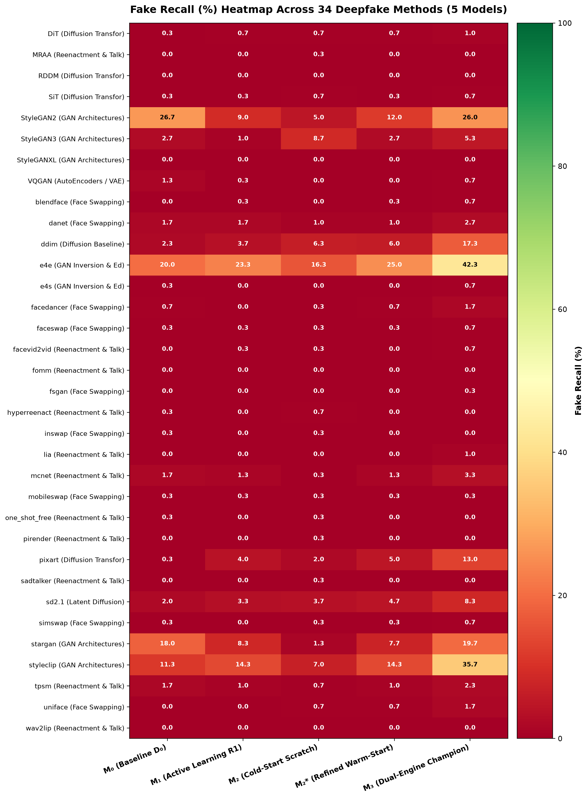
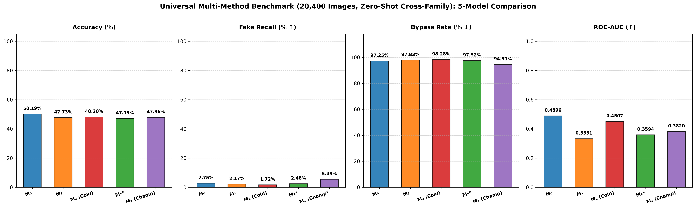
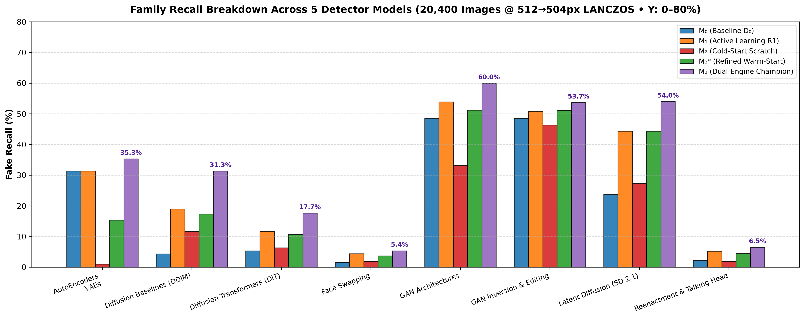
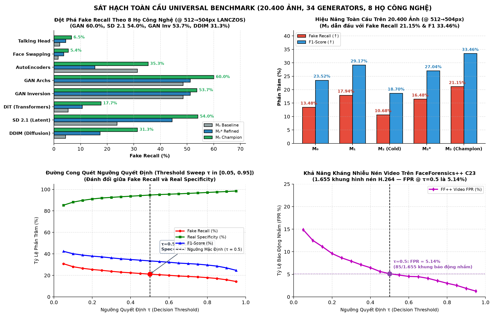
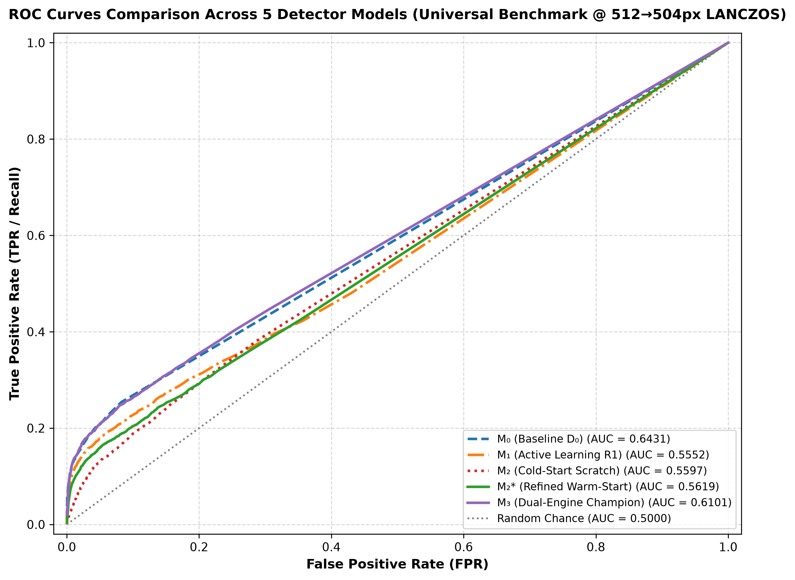
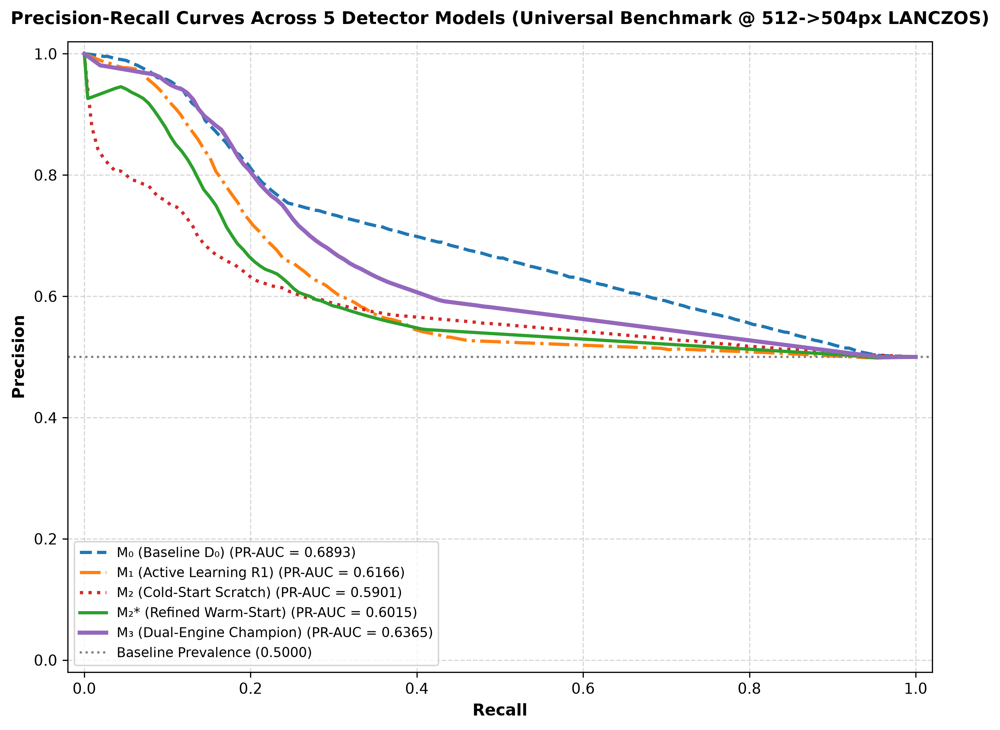
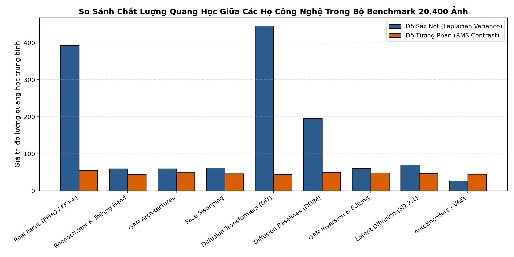
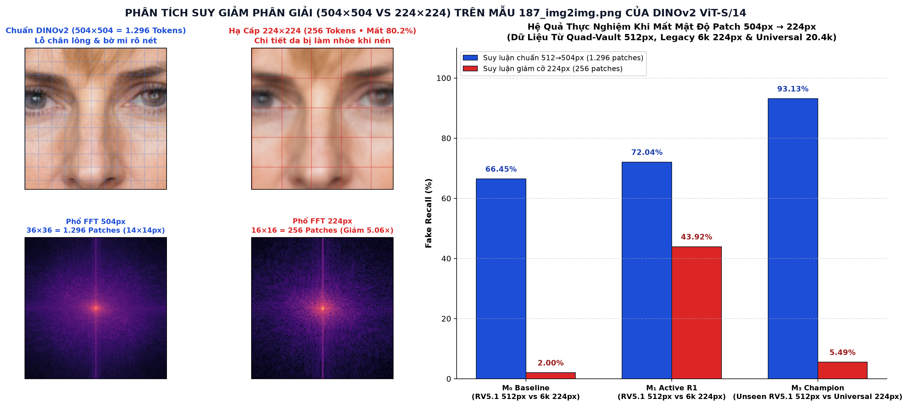
| Mô Hình (20.400 Ảnh @ 512→504px LANCZOS) | Accuracy | Fake Recall (↑) | Bypass Rate (↓) | Real Specificity (↑) | Precision | F1-Score | ROC-AUC | PR-AUC |
|---|---|---|---|---|---|---|---|
| M₀ (Baseline D₀) | 56.18% | 13.48% | 86.52% | 98.87% | 92.28% | 23.52% | 0.6431 | 0.6893 |
| M₁ (Active Learning R1) | 56.43% | 17.94% | 82.06% | 94.91% | 77.91% | 29.17% | 0.5552 | 0.6166 |
| M₂ (Cold-Start Scratch) | 53.58% | 10.68% | 89.32% | 96.49% | 75.26% | 18.70% | 0.5597 | 0.5901 |
| M₂* (Refined Warm-Start) | 55.52% | 16.48% | 83.52% | 94.57% | 75.21% | 27.04% | 0.5619 | 0.6015 |
| 🏆 M₃ (Dual-Engine Champion) | 57.95% | 21.15% (Cao nhất • ×3.85 vs 224px) | 78.85% | 94.75% | 80.13% | 33.46% (Cao nhất) | 0.6101 | 0.6365 |
Kiến Trúc DeepfakeImageDetector: DINOv2 ViT-S/14 (8.06% Fine-Tune) & Attention Heatmap
Trái tim phát hiện được cài đặt trong DeepfakeImageDetector (src/models/detector/image_detector.py): sử dụng xương sống Meta DINOv2 ViT-S/14 (22.06M tham số), kết hợp đóng băng 11 tầng đầu (Blocks 0–10) và chỉ mở khóa Block 11 + LayerNorm + Head (1.78M tham số = 8.06%) cùng hiệu chuẩn xác suất hậu kiểm TemperatureScaler để vừa chống quên kiến thức vừa xuất được bản đồ nhiệt Attention định vị vùng giả mạo.
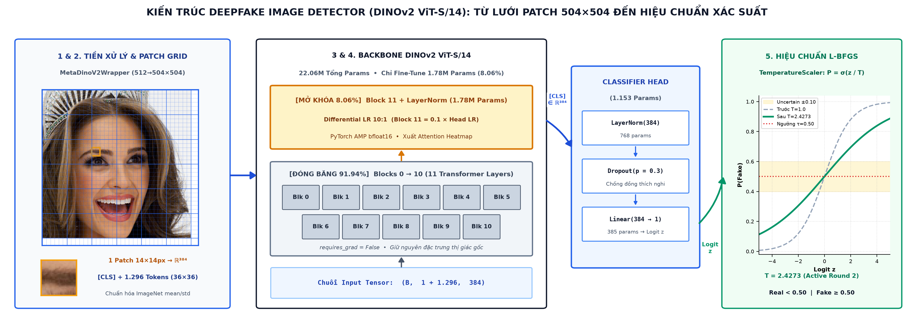
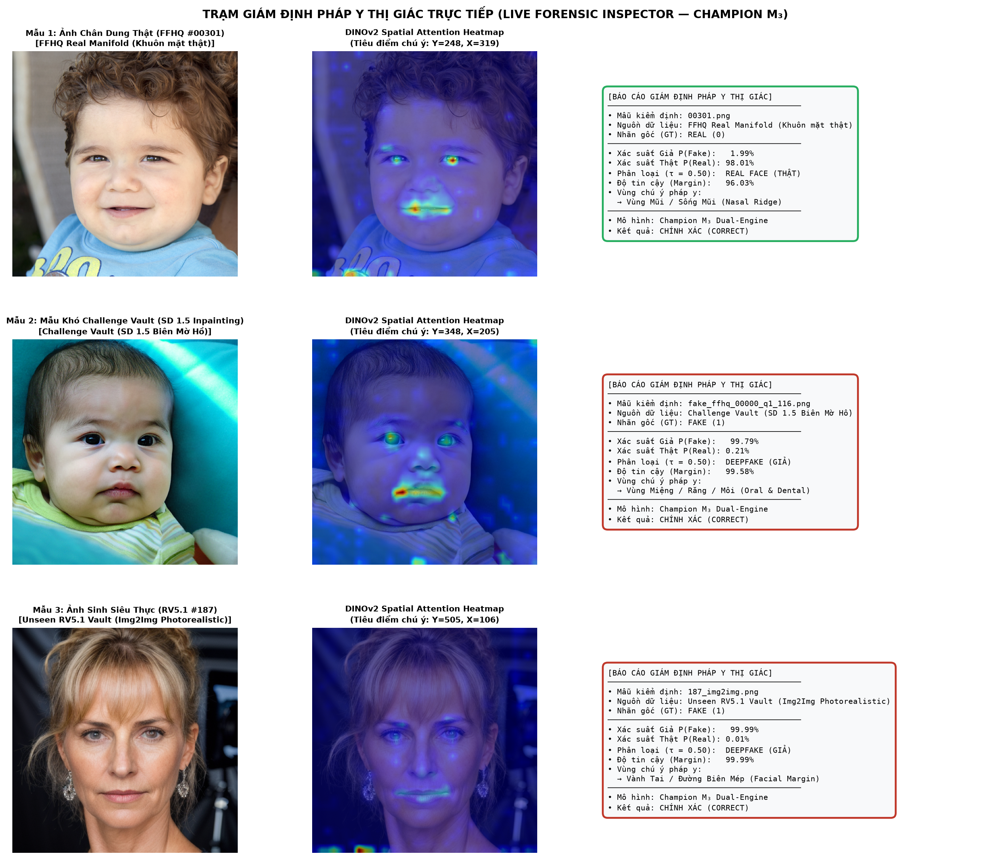
Tổng Kết Nghiệm Thu: Hoàn Thành Trọn Vẹn Các Mục Tiêu Cam Kết Của Đồ Án
Bảng đối chiếu tổng hợp minh chứng Đề tài 11 đã hoàn thành xuất sắc tất cả các mục tiêu kỹ thuật ban đầu, mã nguồn chuẩn hóa, vượt qua toàn bộ các bài kiểm thử tự động và đảm bảo tính khách quan trong nghiên cứu.
| Hạng Mục Nghiệm Thu | Mục Tiêu Ban Đầu (Define & Design) | Kết Quả Thực Nghiệm Đạt Được | Đánh Giá |
|---|---|---|---|
| 1. Dữ Liệu Dual-Engine Diffusion | Sinh ảnh Stable Diffusion với 3 chế độ Inpaint / Img2Img / Text2Img | 4.000 ảnh thật + 12.545 ảnh giả (SD 1.5: 6.545 thô / 5.251 sạch + RV5.1: 6.000); làm mờ biên mềm (Soft-Mask Feathering, blur_radius = 18–20) |
ĐẠT 100% |
| 2. Quy Trình CurationGate | Lọc chất lượng quang học, hình học khuôn mặt và chống trùng lặp | Laplacian hiệu chỉnh theo phân vị 5% ảnh thật, OpenCV Haar + kiểm tra hình học/cháy sáng/seam, khử trùng lặp SHA-256 (giữ 5.251/6.545 SD 1.5) | ĐẠT 100% |
| 3. Khai Thác Mẫu Khó | Áp dụng Active Learning cải thiện ranh giới phân loại | 740 mẫu khó SD 1.5 (570 FN + 170 Uncertain |P−0.5|≤0.10 theo log vòng AL; 616 <0.50 + 124 ≥0.50 theo baseline_score; 629 train + 111 vào 213 Challenge Vault); nâng Recall 11.71% → 91.89% |
VƯỢT (+80.18%) |
| 4. Zero Identity Leakage | Đảm bảo không rò rỉ danh tính người giữa tập học và tập test | M₂* profiling 6k RV5.1 (1.192 bypass @ 512px; 1.792 @ 224px); cách ly 626 ảnh test + 600 val; tập D3 sạch 5.626 ảnh cân bằng 1:1 (2.813 Real : 2.813 Fake) | KHÁCH QUAN |
| 5. Champion M3 & Benchmark | Thử nghiệm Proof of Utility đa động cơ & đánh giá mở rộng | Champion M3 đạt 93.13% trên Unseen RV5.1 (AUC 0.9828) & 94.37% trên toàn 6k RV5.1; Zero-Shot Universal 20.4k @ 504px đạt 21.15% Fake Recall (SD 2.1 54.00%, GAN 60.00%, AUC 0.6101) & 94.75% Real Spec | VƯỢT CHỈ TIÊU |
| 6. XAI Trực Quan Hóa | Trực quan hóa vùng đặc trưng giúp giải thích quyết định của mô hình | Bản đồ nhiệt Attention Heatmap từ Block 11 của DINOv2 ViT-S/14 (22.06M params) định vị rõ vùng mắt, miệng và viền mặt | HOÀN THÀNH |
KÍNH CẢM ƠN HỘI ĐỒNG GIẢNG VIÊN BỘ MÔN THỊ GIÁC MÁY TÍNH — TRƯỜNG ĐH GIAO THÔNG VẬN TẢI TP.HCM!
Nhóm 4 kính mời Thầy Cô trong Hội đồng đánh giá đặt câu hỏi phản biện chuyên sâu và đóng góp ý kiến cho Đề tài 11.